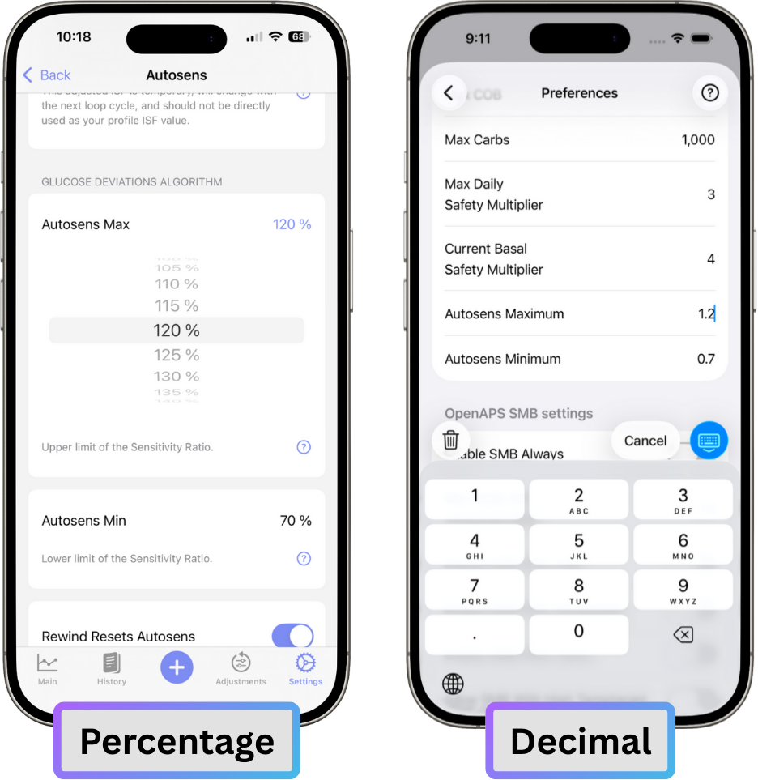

Coming from iAPS
What to Expect After Install
- Onboarding Wizard
Trio will walk you through the initial setup of the app. Learn more in the New User Setup Guide.
- User Interface
You can find more about the Trio User Interface in this walk-through of the app.
- Remote Commands & iOS Shortcuts
Trigger actions like carb entry, bolus, overrides, or temporary targets remotely or through shortcut automation.
- Use Loop Follow v4.0 or Later for remote commands
More info at LoopFollowDocs
- Bolus Calculator
The Bolus Calculator in Trio offers simple dosing with clear breakdowns and safety logic.
- In-App Statistics
There are multiple statistics and graphs available in the Trio app. Click the link to learn more about the Statistics available in the app.
- Important Re: Autotune
Autotune has not performed well with the addition of Dynamic ISF and many users using multiple ISF and CR in Therapy settings. For this reason, we have removed it until an improved Autotune-like feature is built.
- No Dynamic Carb Ratio
There is no evidence to support that your carb ratio varies as ISF does with increasing or decreasing glucose levels. For this reason, Dynamic CR has not been implemented in Trio 0.5+.
What to Expect in Your First 3 Hours
Here are some things to keep in mind after moving from iAPS to Trio v0.5+ in the first 3 hours:
-
Dynamic ISF
Dynamic ISF is disabled for the first 7 days.
Dynamic ISF & Closed Loop
Trio must be in Closed Loop for 7 days in order to enable Dynamic ISF.
-
Autosens
Autosens will require 8–24 hours of data before it starts making adjustments. You may need to enter carbs and bolus during this time if you aren't already doing so.
Initial Limitation with Autosens
There's a long standing issue with Autosens where it will likely be stuck at 100% for the first 24 hours when there are carb entries or SMBs.
- When carb entries or SMBs are not present, Autosens will kick in after 8 hours.
- When carb entries or SMBs are present, Autosens will kick in after 24 hours.
Whether or not to enable SMBs or enter carbs is a personal choice based on what you prioritize in your first 24 hours.
-
Onboarding Wizard
Take this time to go through the Onboarding Wizard. Reference the New User Setup Guide or ask questions on Facebook or Discord if you have any questions.
- Test Settings
This is a great time to test your settings so you can start fresh on solid footing.
-
New User Interface
Use this time to learn the New User Interface.
Do not use a pump or cgm simulator
- Doing so will result in false data being stored and you will have to delete the app with all the data and reinstall before you can use it on a live pump.
- This will also reset your 7-day waiting period for Dynamic ISF.
- More information on simulator use
What to Expect After 24 Hours
A full day on Trio! Congratulations! Here's what to look for:
- Autosens
Autosens now has enough data to make adjustments.
-
Review & Test Settings
This is a good time to review your last 24 hours of results to see if your core settings performed as expected. If you had unexpected challenges with your settings, look at how to test them over the next 7 days:
-
Review Dynamic ISF Documentation
Review the documentation on Using Dynamic ISF in preparation for Day 7.
What to Expect After 7 Days
You've completed a week on Trio! Here's what you should see:
-
Dynamic ISF
Dynamic ISF now has enough data. You now have the option to enable it.
This is a great time to refresh Using Dynamic ISFand check your settings for Logarithmic Dynamic ISF or Sigmoid Dynamic ISF.
Can't Enable Dynamic ISF?
If Dynamic ISF does not give you the option to enable, you may have experienced one or more of the following:
- You were not in closed loop for the full 7 days.
- Trio needs 7 days of closed loop to safely enable Dynamic ISF
- You had significant loss of connection with your CGM and/or pump.
- Check your last week of Looping Statistics in the Stats tab in the Trio app. You need both 7 days and an 85% success rate to enable Dynamic ISF.
- You enabled a significant number of manual Temp Basals with long run times.
- When a manual Temp Basal is set, Trio is unable to complete a loop cycle for the duration of the temp basal. This will cause a reduction in your success rate. If you do not have 85% success rate for 7 days, you cannot enable Dynamic ISF.
-
Dynamic CR
Dynamic CR has been removed due to no known scientific validity to CR changing with an increase or decrease in glucose.
Convert iAPS Settings to Trio Settings
When you move your settings from iAPS to Trio, some of them might look different even if they have the same or similar names. That’s because we some of the numbers went from decimals to percentages to make them easier to understand.
Example
In iAPS you might set "Autosens Maximum" to 1.2. In Trio, we show "Autosens Max" as 120%, which means the same thing, but is easier to understand.

Tip
- To convert a value from a decimal to a percentage, multiply it by 100.
- To convert from a percentage to a decimal, divide by 100.
Some setting names have also changed. We did this to make things less confusing. To help you out, we added definitions right in the app. Just tap the question mark icon next to any setting to see what it means. Healthcare Professionals and users can also find those settings and explanations in this section of the docs.
In iAPS, some settings had limits (called guardrails) that weren’t always visible, and others had no limits at all. In Trio, we’ve made those guardrails easier to see and added a few more where needed, to help prevent settings that could lead to unsafe or unexpected outcomes.
The charts below will help you see which setting names or formats have changed, and where to find them in both iAPS and Trio.
| Trio Name |
Setting Format
(example) |
Location in Trio |
iAPS Name |
Setting Format
(example) |
Location in iAPS |
| Glucose Targets |
decimal
(100 mg/dL | 5.5 mmol/L) |
Settings → Therapy → Glucose Targets |
Target Glucose |
decimal
(100 mg/dL | 5.5 mmol/L) |
Settings → Target Glucose |
| Basal Rates |
decimal
(1.0 U/hr) |
Settings → Therapy → Basal Rates |
Basal Profile |
decimal
(1.0 U/hr) |
Settings → Basal Profile |
| Carb Ratios |
decimal
(10 g/U) |
Settings → Therapy → Carb Ratios |
Carb Ratios |
decimal
(10 g/U) |
Settings → Carb Ratios |
| Insulin Sensitivities |
decimal
(54 mg/dL/U | 3.0 mmol/L/U) |
Settings → Therapy → Insulin Sensitivities |
Insulin Sensitivities |
decimal
(54 mg/dL/U | 3.0 mmol/L/U) |
Settings → Insulin Sensitivities |
| Trio Name |
Setting Format
(example) |
Location in Trio |
iAPS Name |
Setting Format
(example) |
Location in iAPS |
| Glucose Units |
selection
(mg/dL or mmol/L) |
Settings → Therapy → Units and Limits |
Glucose Units |
selection
(mg/dL or mmol/L) |
Settings → OpenAPS → Glucose units |
| Maximum Insulin On Board (IOB) |
decimal
(2 U) |
Settings → Therapy → Units and Limits → Maximum Insulin On Board (IOB) |
Max IOB |
decimal
(2) |
Settings → OpenAPS → Max IOB |
| Maximum Bolus |
decimal
(10 U) |
Settings → Therapy → Units and Limits → Maximum Bolus |
Max Bolus |
decimal
(10) |
Settings → Pump Settings → Max Bolus |
| Maximum Basal Rate |
decimal
(2 U/hr) |
Settings → Therapy → Units and Limits → Maximum Basal Rate |
Max Basal |
decimal
(2) |
Settings → Pump Settings → Max Basal |
| Maximum Carbs on Board (COB) |
decimal
(120 g) |
Settings → Therapy → Units and Limits → Maximum Carbs on Board (COB) |
Max COB |
decimal
(120) |
Settings → OpenAPS → Max COB |
| Minimum Safety Threshold |
decimal
(60 mg/dL) |
Settings → Therapy → Units and Limits → Minimum Safety Threshold |
Threshold Setting |
decimal
(65 mg/dL) |
Settings → Dynamic ISF → Threshold Setting |
| Trio Name |
Setting Format
(example) |
Location in Trio |
iAPS Name |
Setting Format
(example) |
Location in iAPS |
| Autosens Min |
percentage
(70%) |
Settings → Algorithm → Autosens → Autosens Min |
Autosens Minimum |
decimal
(0.7) |
Settings → OpenAPS → Autosens Minimum |
| Autosens Max |
percentage
(120%) |
Settings → Algorithm → Autosens → Autosens Max |
Autosens Maximum |
decimal
(1.2) |
Settings → OpenAPS → Autosens Maximum |
| Rewind Resets Autosens |
toggle
(On/Off) |
Settings → Algorithm → Autosens → Autosens Max |
Rewind Resets Autosens |
toggle
(On/Off) |
Settings → OpenAPS → Rewind Resets Autosens |
| Trio Name |
Setting Format
(example) |
Location in Trio |
iAPS Name |
Setting Format
(example) |
Location in iAPS |
| Enable SMB Always |
toggle
(On/Off) |
Settings → Algorithm → Super Micro Bolus (SMB) → Enable SMB Always |
Enable SMB Always |
toggle
(On/Off) |
Settings → OpenAPS → Enable SMB Always |
| Enable SMB With COB |
toggle
(On/Off) |
Settings → Algorithm → Super Micro Bolus (SMB) → Enable SMB Always(OFF) → Enable SMB With COB |
Enable SMB With COB |
toggle
(On/Off) |
Settings → OpenAPS → Enable SMB With COB |
| Enable SMB with Temptarget |
toggle
(On/Off) |
Settings → Algorithm → Super Micro Bolus (SMB) → Enable SMB Always(OFF) → Enable SMB With TempTarget |
Enable SMB With COB |
toggle
(On/Off) |
Settings → OpenAPS → Enable SMB with Temptarget |
| Enable SMB After Carbs |
toggle
(On/Off) |
Settings → Algorithm → Super Micro Bolus (SMB) → Enable SMB Always(OFF) → Enable SMB After Carbs |
Enable SMB After Carbs |
toggle
(On/Off) |
Settings → OpenAPS → Enable SMB After Carbs |
| Enable SMB With High Glucose |
toggle
(On/Off) |
Settings → Algorithm → Super Micro Bolus (SMB) → Enable SMB Always(OFF) → Enable SMB With High Glucose |
Enable SMB With High BG |
toggle
(On/Off) |
Settings → OpenAPS → Enable SMB With High BG |
| High Glucose Target |
decimal
(110 mg/dL / 6.1 mmol/L) |
Settings → Algorithm → Super Micro Bolus (SMB) → Enable SMB With High Glucose → High Glucose Target |
...When Blood Glucose is Above: |
decimal
(110 mg/dL / 6.1 mmol/L) |
Settings → OpenAPS → ...When Blood Glucose is Above: |
| Allow SMB with High Temp Target |
toggle
(On/Off) |
Settings → Algorithm → Super Micro Bolus (SMB) → Allow SMB With High Temptarget |
Allow SMB With High Temptarget |
toggle
(On/Off) |
Settings → OpenAPS → Allow SMB With High Temptarget |
| Enable UAM |
toggle
(On/Off) |
Settings → Algorithm → Super Micro Bolus (SMB) → Enable UAM |
Enable UAM |
toggle
(On/Off) |
Settings → OpenAPS → Enable UAM |
| Max SMB Basal Minutes |
decimal
(30 min) |
Settings → Algorithm → Super Micro Bolus (SMB) → Max SMB Basal Minutes |
Max SMB Basal Minutes |
decimal
(30) |
Settings → OpenAPS → Max SMB Basal Minutes |
| Max UAM Basal Minutes |
decimal
(30 min) |
Settings → Algorithm → Super Micro Bolus (SMB) → Max UAM Basal Minutes |
Max UAM SMB Basal Minutes |
decimal
(30) |
Settings → OpenAPS → Max UAM SMB Basal Minutes |
| Max Allowed Glucose Rise for SMB |
percentage
(20%) |
Settings → Algorithm → Super Micro Bolus (SMB) → Max Allowed Glucose Rise for SMB |
Max Delta-BG Threshold SMB |
decimal
(0.2) |
Settings → OpenAPS → Max Delta-BG Threshold SMB |
| Trio Name |
Setting Format
(example) |
Location in Trio |
iAPS Name |
Setting Format
(example) |
Location in iAPS |
| Dynamic ISF |
selection
(Disabled / Logarithmic / Sigmoid) |
Settings → Algorithm → Dynamic Settings → Dynamic ISF |
Activate Dynamic Sensitivity (ISF) |
toggle
(On/Off) |
Settings → Dynamic ISF → Activate Dynamic Sensitivity (ISF) |
| Adjustment Factor |
percentage
(80%) |
Settings → Algorithm → Dynamic Settings → Dynamic ISF (Logarithmic) → Adjustment Factor |
Adjustment Factor |
decimal
(0.8) |
Settings → Dynamic ISF → Activate Dynamic Sensitivity (ISF) (ON) → Use Sigmoid Function (OFF) → Adjustment Factor |
| Sigmoid Adjustment Factor |
percentage
(50%) |
Settings → Algorithm → Dynamic Settings → Dynamic ISF (Sigmoid) → Sigmoid Adjustment Factor |
Adjustment Factor |
decimal
(0.5) |
Settings → Dynamic ISF → Activate Dynamic Sensitivity (ISF) (ON) → Use Sigmoid Function (ON) → Adjustment Factor |
| Weighted Average of TDD |
percentage
(35%) |
Settings → Algorithm → Dynamic Settings → Dynamic ISF (Logarithmic/Sigmoid) → Weighted Average of TDD |
Weighted Average of TDD. Weight of past 24 hours: |
decimal
(0.35) |
Settings → Dynamic ISF → Activate Dynamic Sensitivity (ISF) (ON) → Weighted Average of TDD. Weight of past 24 hours: |
| Adjust Basal |
toggle
(On/Off) |
Settings → Algorithm → Dynamic Settings → Dynamic ISF (Logarithmic/Sigmoid) → Adjust Basal |
No Equivalent Setting |
N/A |
N/A |
| Trio Name |
Setting Format
(example) |
Location in Trio |
iAPS Name |
Setting Format
(example) |
Location in iAPS |
| High Temp Target Raises Sensitivity |
toggle
(On/Off) |
Settings → Algorithm → Target Behavior → High Temp Target Raises Sensitivity |
High Temptarget Raises Sensitivity |
toggle
(On/Off) |
Settings → OpenAPS → High Temptarget Raises Sensitivity |
| Low Temp Target Lowers Sensitivity |
toggle
(On/Off) |
Settings → Algorithm → Target Behavior → Low Temp Target Lowers Sensitivity |
Low Temptarget Lowers Sensitivity |
toggle
(On/Off) |
Settings → OpenAPS → Low Temptarget Lowers Sensitivity |
| Sensitivity Raises Target |
toggle
(On/Off) |
Settings → Algorithm → Target Behavior → Sensitivity Raises Target |
Sensitivity Raises Target |
toggle
(On/Off) |
Settings → OpenAPS → Sensitivity Raises Target |
| Resistance Lowers Target |
toggle
(On/Off) |
Settings → Algorithm → Target Behavior → Resistance Lowers Target |
Resistance Lowers Target |
toggle
(On/Off) |
Settings → OpenAPS → Resistance Lowers Target |
| Half Basal Exercise Target |
decimal
(160 mg/dL | 8.9 mmol/L) |
Settings → Algorithm → Target Behavior → Half Basal Exercise Target |
Half Basal Exercise Target |
decimal
(160 mg/dL | 8.9 mmol/L) |
Settings → OpenAPS → Half Basal Exercise Target |
Warning
The settings in this section typically do not require any modifications.
Do not alter them without a solid understanding of what you are changing and the full impact it will have on the algorithm.
| Trio Name |
Setting Format
(example) |
Location in Trio |
iAPS Name |
Setting Format
(example) |
Location in iAPS |
| Max Daily Safety Multiplier |
percentage
(300%) |
Settings → Algorithm → Additionals → Max Daily Safety Multiplier |
Max Daily Safety Multiplier |
decimal
(3) |
Settings → OpenAPS → Max Daily Safety Multiplier |
| Current Basal Safety Multiplier |
percentage
(400%) |
Settings → Algorithm → Additionals → Current Basal Safety Multiplier |
Current Basal Safety Multiplier |
decimal
(4) |
Settings → OpenAPS → Current Basal Safety Multiplier |
| Duration of Insulin Action |
decimal
(10 hr) |
Settings → Algorithm → Additionals → Duration of Insulin Action |
Duration of Insulin Action |
decimal
(10) |
Settings → Pump Settings → Duration of Insulin Action |
| Use Custom Peak Time |
toggle
(On/Off) |
Settings → Algorithm → Additionals → Use Custom Peak Time |
Use Custom Peak Time |
toggle
(On/Off) |
Settings → OpenAPS → Use Custom Peak Time |
| Insulin Peak Time |
decimal
(65 min) |
Settings → Algorithm → Additionals → Use Custom Peak Time (ON) → Insulin Peak Time |
Insulin Peak Time |
decimal
(65) |
Settings → OpenAPS → Insulin Peak Time |
| Skip Neutral Temps |
toggle
(On/Off) |
Settings → Algorithm → Additionals → Skip Neutral Temps |
Skip Neutral Temps |
toggle
(On/Off) |
Settings → OpenAPS → Skip Neutral Temps |
| Unsuspend If No Temp |
toggle
(On/Off) |
Settings → Algorithm → Additionals → Unsuspend If No Temp |
Unsuspend If No Temp |
toggle
(On/Off) |
Settings → OpenAPS → Unsuspend If No Temp |
| SMB Delivery Ratio |
percentage
(50%) |
Settings → Algorithm → Additionals → SMB Delivery Ratio |
SMB DeliveryRatio |
decimal
(0.5) |
Settings → OpenAPS → SMB DeliveryRatio |
| SMB Interval |
decimal
(3 min) |
Settings → Algorithm → Additionals → SMB Interval |
SMB Interval |
decimal
(3) |
Settings → OpenAPS → SMB Interval |
| Min 5m Carb Impact |
decimal
(8 mg/dL) |
Settings → Algorithm → Additionals → Min 5m Carb Impact |
Min 5m Carbimpact |
decimal
(8) |
Settings → OpenAPS → Min 5m Carbimpact |
| Remaining Carbs Percentage |
percentage
(100%) |
Settings → Algorithm → Additionals → Remaining Carbs Percentage |
Remaining Carbs Fraction |
decimal
(1) |
Settings → OpenAPS → Remaining Carbs Fraction |
| Remaining Carbs Cap |
decimal
(90g) |
Settings → Algorithm → Additionals → Remaining Carbs Cap |
Remaining Carbs Cap |
decimal
(90) |
Settings → OpenAPS → Remaining Carbs Cap |
| Noisy CGM Target Increase |
percentage
(130%) |
Settings → Algorithm → Additionals → Noisy CGM Target Increase |
Noisy CGM Target Multiplier |
decimal
(1.3) |
Settings → OpenAPS → Noisy CGM Target Multiplier |
| Trio Name |
Setting Format
(example) |
Location in Trio |
iAPS Name |
Setting Format
(example) |
Location in iAPS |
| Display Meal Presets |
toggle
(On/Off) |
Settings → Features → Bolus Calculator → Display Meal Presets |
No Equivalent Setting |
N/A |
N/A |
| Recommended Bolus Percentage |
percentage
(80%) |
Settings → Features → Bolus Calculator → Recommended Bolus Percentage |
Override With a Factor Of |
decimal
(0.8) |
Settings → Bolus Calculator → Override With A Factor Of |
| Enable Reduced Bolus |
toggle
(On/Off) |
Settings → Features → Bolus Calculator → Enable Reduced Bolus |
Apply factor for fatty meals |
toggle
(On/Off) |
Settings → Bolus Calculator → Apply factor for fatty meals |
| Reduced Bolus Percentage |
percentage
(30%) |
Settings → Features → Bolus Calculator → Enable Reduced Bolus (ON) → Reduced Bolus Percentage |
Override With a Factor Of |
decimal
(0.7) |
Settings → Bolus Calculator → Apply factor for fatty meals (ON) → Override With A Factor Of |
| Enable Super Bolus |
toggle
(On/Off) |
Settings → Features → Bolus Calculator → Enable Super Bolus |
No Equivalent Setting |
N/A |
N/A |
| Super Bolus Percentage |
percentage
(100%) |
Settings → Features → Bolus Calculator → Enable Super Bolus (ON) → Super Bolus Percentage |
No Equivalent Setting |
N/A |
N/A |
| Very Low Glucose Warning |
toggle
(On/Off) |
Settings → Features → Bolus Calculator → Very Low Glucose Warning |
No Equivalent Setting |
N/A |
N/A |
| Trio Name |
Setting Format
(example) |
Location in Trio |
iAPS Name |
Setting Format
(example) |
Location in iAPS |
| Max Carbs |
decimal
(250 g) |
Settings → Meal Settings → Max Carbs |
Max Carbs |
decimal
(1,000) |
Settings → OpenAPS → Max Carbs |
| Max Protein |
decimal
(250 g) |
Settings → Meal Settings → Enable Fat and Protein Entries (ON) → Max Protein |
No Equivalent Setting |
N/A |
N/A |
| Max Fat |
decimal
(250 g) |
Settings → Meal Settings → Enable Fat and Protein Entries (ON) → Max Fat |
No Equivalent Setting |
N/A |
N/A |
| Max Meal Absorption Time |
decimal
(6 hr) |
Settings → Meal Settings → Max Meal Absorption Time |
No Equivalent Setting |
N/A |
N/A |
| Enable Fat and Protein Entries |
toggle
(On/Off) |
Settings → Meal Settings → Enable Fat and Protein Entries |
Display and allow Fat and Protein entries |
toggle
(On/Off) |
Settings → UI/UX → Display and allow Fat and Protein entries |
| Fat and Protein Delay |
decimal
(60 min) |
Settings → Meal Settings → Enable Fat and Protein Entries (ON) → Fat and Protein Delay |
Delay in Minutes |
decimal
(60) |
Settings → Fat and Protein Conversion → Delay In Minutes |
| Maximum Duration |
decimal
(8 hr) |
Settings → Meal Settings → Enable Fat and Protein Entries (ON) → Maximum Duration |
Maximum Duration In Hours |
decimal
(8) |
Settings → Fat and Protein Conversion → Maximum Duration in Hours |
| Spread Interval |
decimal
(30 min) |
Settings → Meal Settings → Enable Fat and Protein Entries (ON) → Spread Interval |
Interval In Minutes |
decimal
(30) |
Settings → Fat and Protein Conversion → Interval In Minutes |
| Fat and Protein Percentage |
percentage
(50%) |
Settings → Meal Settings → Enable Fat and Protein Entries (ON) → Fat and Protein Percentage |
Override With A Factor Of |
decimal
(0.5) |
Settings → Fat and Protein Conversion → Override With A Factor Of |
Other Notable Settings
| Trio Name |
Setting Format
(example) |
Location in Trio |
iAPS Name |
Setting Format
(example) |
Location in iAPS |
| Temp Target: Sensitivity Adjustment |
selection/percentage
(Standard/Custom)
(100%) |
Adjustments → Add Temp Target → Sensitivity Adjustment |
Temp Target: Experimental |
toggle/percentage
(On/Off)
(100%) |
Temp Target → Experimental (ON) |